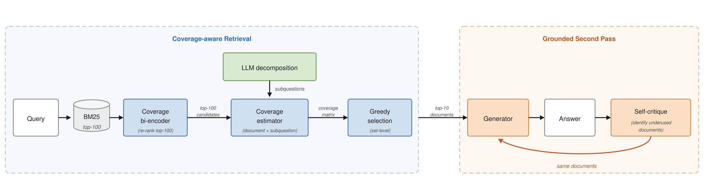
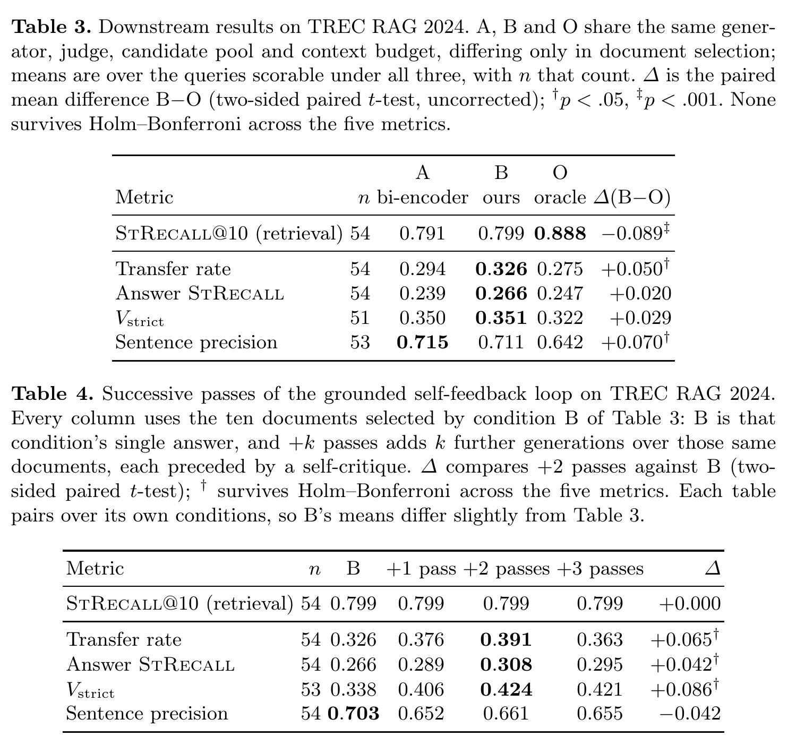

Contents · 10 sections
1What problem is it actually solving?2The pipeline: make coverage explicit3How the bi-encoder learns to fill gaps4Coverage matrix and greedy selection5Retrieval results6More coverage, no more complete answers7Pointing the model back at evidence it skipped8Limitations as I see them9How a search team could try it10ConclusionSHARE
This paper builds a long-form RAG retrieval pipeline that computes coverage explicitly, and uses it to find that more complete retrieval does not necessarily mean a more complete answer. Scoring documents one by one for relevance and keeping the top ten often yields documents that repeat the same aspect; instead, the authors have an LLM split the question into a set of sub-questions, use a cross-encoder to predict which sub-questions each candidate document can answer, and then repeatedly pick the document that answers the most sub-questions not yet covered. On TREC RAG 2024, α-nDCG@10 rises from 0.625 to 0.702, close to the ceiling of 0.718 reached when human-written answer nuggets replace the sub-questions. Yet in a controlled comparison with the generator, candidate pool and document budget fixed, documents chosen directly with the reference labels (the pre-made record of which nuggets each document covers) cover more, but put no more nuggets into the answer. Answer completeness depends not only on what is retrieved but also on whether the generator uses it. The authors therefore add a critique-and-rewrite step that points the model back at documents it under-used; after two passes, coverage of vital nuggets rises by 0.086.
What problem is it actually solving?
Long-form RAG means the user asks a question that needs a report-style answer; the system retrieves a set of documents and a generator writes a dozen or so cited sentences. Such answers are usually judged by splitting a reference answer into atomic facts, which the paper calls nuggets (below, "answer points"), and counting how many the system's answer states.
The trouble is that the retriever scores each document on its own and keeps the top ten. Take the question "Is a family electric car worth buying?" (illustrative). A complete answer covers at least five aspects: range, charging, maintenance cost, resale value and safety.
| Rank | Document picked by relevance (illustrative) | New aspect covered |
|---|---|---|
| 1 | Winter range test | Range |
| 2 | Range comparison of ten cars | None |
| 3 | Range loss on highways | None |
| 4 | Installing a home charger | Charging |
| 5 | Coping with range anxiety | None |
All five are relevant, yet three say the same thing, and maintenance, resale and safety get nothing. Each document scores well alone, but together they waste the context.
The paper gives the real scale. On TREC RAG 2024, if you use the reference labels directly, that is, the pre-made record of which answer points each document covers (points written by people, links judged by an LLM), five documents already cover 85.8% of the points, the same as ten. A bi-encoder trained specifically for coverage covers only 76.2% with its top ten. In other words, with the reference labels, slots after the fifth add no new points, while a retriever that scores documents one by one uses all ten slots and still covers less, so many of its slots hold repeated evidence.
The usual fix is diversity reranking such as MMR, which uses similarity to already chosen documents to judge repetition. The authors argue this is the wrong proxy. Two documents with dissimilar embeddings need not add different points; the second may just be phrased differently or off topic. The right question is which still-unanswered sub-questions a document can answer.
The pipeline: make coverage explicit

The pipeline has four steps:
| Step | What it does | Output |
|---|---|---|
| Candidate pool | BM25 top 100 | One shared pool for every method |
| Bi-encoder rerank | A coverage-trained ModernBERT bi-encoder scores the 100 | An order used later to break ties |
| Sub-questions | An LLM writes 10 self-contained sub-questions | A list of sub-questions |
| Coverage + greedy | A cross-encoder scores each (document, sub-question) pair from 0 to 1, above 0.3 counts as covered; greedy picks 10 | The 10 documents passed to the generator |
The division of labor: the bi-encoder says "this is roughly relevant", the coverage matrix says "this fills these gaps".
How the bi-encoder learns to fill gaps
This stage reproduces the training objective of earlier work, CoveR; the authors say plainly it is not their contribution and is there so selection is tested on top of a strong retriever. Training data comes from Researchy Questions: each question has GPT-4-written sub-questions, and Llama rates every (document, sub-question) pair from 0 to 5, with 4 or above meaning the document answers it.
During training, some sub-questions are assumed already covered. A document that answers at least one uncovered sub-question is a positive; one that only answers covered sub-questions is a "redundant negative"; one that answers nothing is an irrelevant negative. This covered set is part of the model input: during training, the query side of the bi-encoder is the question paired with the covered sub-questions, compared against positive and negative documents. So the same document can get a different label under a different covered set, and the model learns which document still adds something given the evidence already there. The paper does not say what covered state fills the query side when the coverage-trained bi-encoder ranks candidates at inference. In use, it scores each of the 100 BM25 candidates once and sorts them. During greedy selection this score is not recomputed as documents are picked; it only breaks ties. The training set is just 1,929 examples over 847 questions. Hoot says

- same document, now a duplicate negative
- answers an uncovered one: positive
- answers, but already covered
- cannot answer
- Labels depend on coverage: the documents do not change; the query side just gains "sub-question 1 covered" as input. So the two-tower model learns which document still adds something given the evidence so far. A score of 4 or above from Llama counts as answering.
This paper's contribution lies in the later document-selection step; the two-tower step reproduces prior work, CoveR, to give it a strong retriever. Illustrative: a question has sub-questions 1, 2 and 3; document A answers 1 and document B answers 2. Source: illustrative example of coverage-aware training in the paper's §3
The authors also tried a much larger version, 44,558 examples over 20,000 questions, where positives had to cover more than half of the uncovered sub-questions. It did worse (α-nDCG@10 0.598 versus 0.656). At the start nothing is covered, so the strict rule throws away many moderately relevant documents as neutral. That version changed both size and the positive rule, and the paper does not separate the two, so all one can say is that more data with a stricter positive rule did not help.
Coverage matrix and greedy selection
Why a separate step beyond the bi-encoder? Because the bi-encoder scores each document alone and cannot know what has already been picked. How many sub-questions a set covers is a property of the set, so it has to be computed while selecting.
The coverage estimator is a ModernBERT cross-encoder: input one document and one sub-question, output the probability that the document answers it. Its labels are again Llama ratings of 4 or above, over 850,000 pairs from 3,000 questions. For one question, 100 candidates pair with 10 sub-questions, so each question needs 1,000 scores. Entries above 0.3 become 1, meaning the document answers that sub-question.
Greedy selection picks, each round, the document that answers the most still-unanswered sub-questions, breaking ties by bi-encoder score. With the car example (illustrative):
| Round | Candidates and new coverage | Picked | Covered so far |
|---|---|---|---|
| 1 | Winter range test 2 (range, safety); Full cost of ownership 3 (maintenance, resale, charging) | Full cost of ownership | Maintenance, resale, charging |
| 2 | Winter range test 2; Range comparison 1 | Winter range test | All 5 |
| 3 | Every candidate 0 | Bi-encoder order | Unchanged |
Once no gap is left, the rule falls back to bi-encoder order, so the output is always a full ranking. Unlike MMR, "adds something new" is judged by which sub-questions a document answers, not by embedding similarity.
Retrieval results
The main results are on the 56 questions of TREC RAG 2024. The main metric is α-nDCG@10. StRecall@10 is the share of all distinct points covered anywhere in the top ten.
| Method | α-nDCG@10 | StRecall@10 | P@10 | nDCG@10 |
|---|---|---|---|---|
| Relevance-trained bi-encoder | 0.625 | 0.744 | 0.754 | 0.784 |
| + coverage training | 0.656 | 0.762 | 0.773 | 0.798 |
| + coverage estimator and greedy selection | 0.702 | 0.770 | 0.775 | 0.800 |
| Human-written reference points instead of sub-questions (decomposition ceiling) | 0.718 | 0.781 | 0.771 | 0.802 |
| Reference coverage matrix (selection ceiling) | 0.887 | 0.858 | 0.800 | 0.857 |
Coverage training adds 0.031, explicit selection a further 0.046. With the retriever fixed, treating coverage as a set-level selection problem pays more than changing the retriever's training objective. P@10 and nDCG@10 stay flat or rise at every step, so the coverage is not bought with relevance.
The two ceilings separate cleanly. Replacing LLM sub-questions with human-written reference points adds only 0.016; replacing the predicted coverage matrix with the reference one adds 0.169. The remaining headroom lies mostly in coverage estimation, that is, judging whether a document answers a sub-question.
The decomposer matters little. At the 0.3 threshold, Qwen2.5-7B scores 0.675 and GPT-4o 0.702, so moving from 7B to a frontier model is worth 0.027. The fully open Llama-3.3-70B is only 0.019 below GPT-4o, so a deployment can skip the proprietary model at first.
More coverage, no more complete answers
This is the part most worth reading. The authors fix the generator (Qwen2.5-7B-Instruct), the judge, the pool and the 10-document budget, truncate each document to 250 words, and vary only selection: A is bi-encoder top ten, B is this method, O is greedy selection with the reference coverage matrix.

A few metrics first. Transfer rate is the share of points present in the context that reach the answer. Answer StRecall is the share of all points the answer states. V_strict is the share of points labeled "vital" that the answer fully states. Sentence precision is the share of cited factual sentences actually supported by the cited documents.
Documents picked with the reference matrix cover 88.8% of the points against 79.9% for this method, a significant gap. Yet transfer rate runs the other way: 0.326 for this method, 0.275 for the reference matrix; sentence precision is 0.711 versus 0.642. Answer StRecall and V_strict are also slightly higher for this method but not significantly, and after correcting for multiple comparisons no difference is significant. The authors read this carefully: it does not show their selection is better, only that a large lead in retrieved coverage did not become a more complete answer.
Against plain bi-encoder top ten, this method has no stable edge either. On TREC RAG 2024 answer StRecall is 0.027 higher, not significant; on CRUX-DUC04 retrieval coverage is slightly higher but answer StRecall is 0.024 lower. Pooled, the gap is 0.003.
The authors' explanation: a set that covers more tends to share fewer facts across documents. With the answer fixed at about a dozen sentences, the model has to jump between unrelated points and cannot develop any. The paper notes this is consistent with earlier findings, but its experiments do not isolate it.
Pointing the model back at evidence it skipped
Since the bottleneck is generation, the authors add a critique-and-rewrite step after the first answer: the model reads its previous answer, names the documents it under-used, is pointed back at them, and rewrites over the same 10 documents, now asked for about 18 sentences. The paper does not say what inputs the iter2self critique step sees besides the previous answer, or how it decides a document was under-used. Below, "one pass" and "two passes" count such rewrites after the first answer. Nothing new is retrieved and no reference answer is seen.
Length alone is not enough: asking the first pass for 18 sentences leaves transfer rate unchanged and answer StRecall 0.003 lower. The gain comes from pointing at under-used documents, not from writing more.
After two rewrites, V_strict rises from 0.338 to 0.424, with transfer rate and answer StRecall rising alongside, all three significant after correction, so the model really did write more of the available evidence into the answer. A third rewrite gives some back, so two is the place to stop. The cost is sentence precision: it drops 0.050 on the first pass and then stays put, ending 0.042 lower after two passes, not significant, meaning most of the extra content still has a source.
The authors compare three kinds of feedback. Pasting in the text of the missed reference points pushes transfer rate to 0.771, but sentence precision falls from 0.703 to 0.413 because the model restates content it cannot attribute to any document. Only telling the model which documents support the missed points raises V_strict by 0.083 with precision down just 0.031. Pure self-critique gets about 80% of the gain from naming the supporting documents (0.068). Feedback should point the model back to evidence it already has, not hand it the content.
Limitations as I see them
First, the samples are small. The two collections have 56 and 50 questions, and most downstream differences are not significant after correction. The retrieval results in Table 1 have no significance tests, and the authors say their ordering is only indicative.
Second, the threshold was chosen on the test set. The 0.3 coverage threshold was picked on the evaluation collection with no held-out set, and the authors admit 0.702 is optimistic. Human-written points do best at 0.7 and LLM sub-questions at 0.3, so a new sub-question source means retuning.
Third, cost is not reported. Coverage estimation needs about 1,000 cross-encoder calls per question, and each feedback pass is another full generation over the context; the paper gives no latency or compute numbers. Document-to-point links are also LLM-judged, about 69% precision and 90% recall against humans, so absolute scores carry that judge's bias.
How a search team could try it
Step one, measure your own transfer rate. Take a batch of queries that need long answers, have an LLM split reference answers into points, and count how many the retrieved context covers and how many the answer states. If transfer is also around 0.3, fixing generation pays before fixing retrieval.
Step two, try the cheapest self-feedback. Leave retrieval alone and add one pass on the existing context: the model names under-used documents, then rewrites. Track vital-point coverage and citation precision, and stop at two passes.
Step three, try coverage selection. Score (document, sub-question) pairs with an off-the-shelf cross-encoder, add LLM decomposition and greedy selection, tune the threshold on a held-out set, and log the extra scoring calls and latency per query.
Step four, if both help, combine them and watch three lines together, retrieval coverage, answer coverage and citation precision, not retrieval metrics alone.
Conclusion
The retrieval method is a sound engineering improvement, but the thing to take away is the controlled experiment: retrieval coverage went from 0.799 to 0.888 and the answer did not become more complete, with transfer staying near 0.3.
| Dimension | Assessment |
|---|---|
| Problem importance | High. Long-form RAG commonly takes the top ten by relevance, and repeated evidence wasting context is a common problem |
| Method novelty | Medium. Decomposition, coverage scoring and greedy selection are known ideas; the new part is a predicted coverage matrix in place of similarity-based dedup |
| Evidence | Medium. The controls are clean, but the collections have only 56 and 50 questions, most downstream gaps are not significant, and the threshold was tuned on the test set |
| Engineering cost | Medium-high. About 1,000 cross-encoder calls per query, plus a full generation per feedback pass |
| Worth trying | Yes, starting with self-feedback. It leaves retrieval alone, needs no labels, and in two passes raises vital-point coverage by 0.086 |
How did this read for you?
Hoot made a note. Thanks for the feedback.
One tap, no sign-in; tap again to undo. Only anonymous counts are kept, never who you are.
Discussion
Add experiment details, reproduction notes or a different take. Requires a GitHub sign-in.
Loading the discussion…